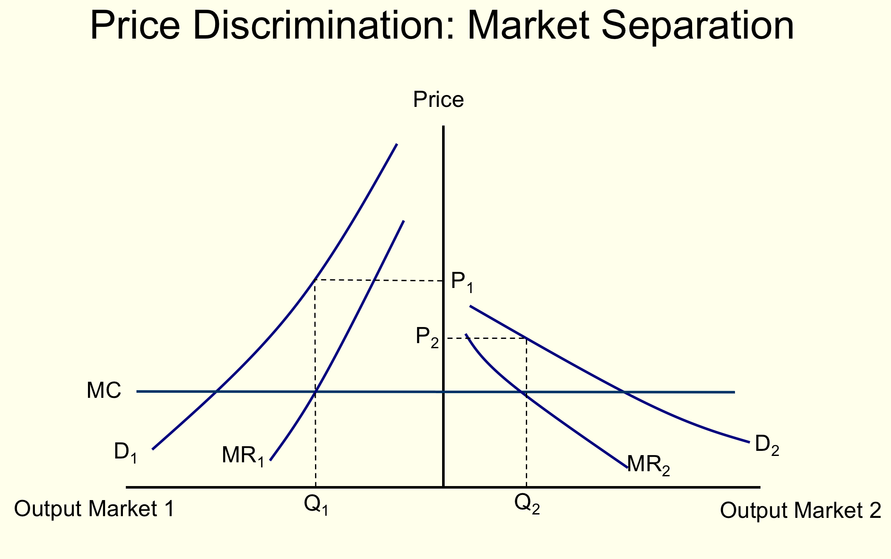

13 Monopolies and price discrimination [1-2 hours] (L9)
ns: 11.2-11.4
T1:07
causes of monopoly (brief)
profit maximization
What’s wrong with monopoly?
Price discrimination: first coverage; types of pd
Article: Should we help companies tailor prices to your wage packet?
With accompanying worked examples
More advanced: ‘The Government May Want to Encourage Price Discrimination by Income’ Linked here
Sixth problem set: Monopolies and price discrimination
13.0.1 Price discrimination in the media
Moneybox - – many mis-statements; can you identify them?
13.0.2 Lecture goals
What are monopolies and what are barriers to entry?
How do monopolies choose prices and quantities?
What are the social (welfare) consequences of monopoly?
What is ‘price discrimination’?
What forms can price discrimination take, and how does it increase a monopoly’s profits?
How does price discrimination affect social welfare, and whom does it help or hurt?
(Very briefly: other forms of imperfect competition)
Rem: perfect competition
- free entry and exit
- \(\rightarrow\) zero long-run economic profit
- many many tiny firms
- \(\rightarrow\) firms are price takers
- \(\rightarrow\) p=mc
- And in the long run \(p=ATC\) and firms produce at \(min(AC)\)
these are extreme assumptions; perhaps only a theoretical ideal
- (Firms with market power might set \(p>mc\))
Opposite extreme: monopoly
A single firm
Barriers to entry \(\rightarrow\) No threat of entry
Can choose price, which becomes the ‘market price’
Still, the more it charges the fewer units demanded
Chooses a price (or quantity) where MR=MC (like all firms do)
Produces ‘less than socially optimal quantity’ in order to charge a high price and increase its profit
13.1 Barriers to entry
13.1.1 Technical barriers to entry
- IRS/ Diminishing average cost over a broad range of output
- \(\rightarrow\) ‘a natural monopoly’
- (Here multiple firms producing separately are less efficient, cannot produce the lowest cost)
- Special knowledge of a low-cost method of production, or key resource
13.1.2 Legal barriers to entry.
- Patents and copyrights
- Exclusive franchise or license (granted by government, by another firm, by a university)
- Government support for a dominant firm, discouraging/forbidding others
… from the 2016 Massachusetts ballot initiative:

13.2 Monopoly profit-maximisation
As always, set Q to maximize \(QP(Q)-C(Q)\)
leads to optimization where \(MR(Q) = MC(Q)\) (assuming P>AC)
Remember, the ‘volume’ benefit of increasing Q is countered by
- Greater cost (producing more always costs more)
- The need to reduce price (on all units) to get people to buy it
13.2.1 Graphically: Monopoly profit-max


Notes:
Rem: Firm’s revenue is Price \(\times\) Quantity.
Rectangle for a specific point on demand curve.
Firm’ profit is this less average cost.
MR tells you how the ‘revenue rectangle’ will increase (or decrease) with another unit.
MC tells you the cost of this additional unit.
Where MR>MC, increasing quantity a little bit increases revenue more than costs, thus increasing profit.

Note:
Be careful here:
The price the monopoly can get at quantity \(Q^*\) is \(P^*\)
… project up to the demand curve NOT the MR curve.

Note:
Again, remember that revenue is \(P^*Q^*\) but costs at \(Q^*\) are \(Q^* \times AC\)
so profit is \((P^*-AC)Q^*\).
By the way, the AC adds up the MC and the FC and divides by the quantity.

13.3 Skip: ‘no supply curve for a monopoly’
13.4 The deadweight loss of monopoly
Criticisms of monopoly:
Monopolies produce too little output: allocatively inefficient.
There is a redistribution of wealth from consumers to owners.
- But this could be counterbalanced by government redistribution
Compared to perfect competition, a monopoly typically produces less output and charges a higher price
Some of the consumer surplus under perfect competition is transferred to the monopolist.
There is also a deadweight loss under monopoly

Note:
The difference in monopoly vs perfect competitive quantity
… difference in price
… difference in consumer surplus
… difference in firm profit

Note: The differences (costs, transfers) refer to the monopoly outcomes relative to perfect competition.

Other criticisms: Some argue the deadweight loss (DWL) above understates the true harm of monopoly
‘Secure’ monopolies don’t innovate as much, and spend wastefully?
Monopolies may expend wasteful resources (lobbying, threats, lawsuits…) to preserve barriers to entry
- Thus the above monopoly profits may turn into further deadweight losses!
On the other side, some argue monopolies tend not to persist in the long run, are disciplined by potential entry, and have greater incentives to innovate
Empirically, the magnitude of the social cost of monopoly is an open question
- Estimates range from 0.5% of GDP to 5% of GDP
13.5 Price discrimination
- Price Discrimination
The practice of firms offering different prices to different consumers
- Or different prices for slightly different products or quantities,
- where the difference in price does not merely reflect cost difference,
- with the goal of distinguishing consumers’ willingness to pay (WTP).
Note: This includes ‘volume discounts’, or offering an ‘all you can eat’ plan alongside a per-unit plan

Why such a complicated price list?
13.5.1 Why do firms price discriminate?
It can increase profit
- by ‘extracting more surplus’ from consumers
In general, for a monopoly firm, the ability to identify consumers based on their WTP and charge distinct prices will increase profit
- However, it may increase or decrease social (consumer+producer) surplus…
- Consumer surplus itself may increase or decrease.
13.5.2 The alternative to price discrimination (previous analysis)
Offering a single price for a good for all consumers is known as ‘uniform pricing’.
- This does not deal with differences amongst consumers.
- May force you to target a particular group, such as the wealthy, reducing your total sales.
- Under monopoly, this leads to a deadweight loss


- Price discrimination may seem counter-intuitive: ‘how can offering some consumers lower prices increase profit?’
- Higher prices increase your profit per unit, but at a higher price you will sell fewer units. The more you charge the less you sell.
- Some groups of ‘less keen’ consumers are very sensitive to the price, and they will buy very little at a high price, so a lower price would be more profitable.
- Some groups of ‘more keen’ consumers will buy a lot even at a high price. They are less ‘price-sensitive’, so you want to charge them more.
13.5.3 The three types of price discrimination
- Individual-based (First degree; at best ‘perfect’)
Note: Targeting a price at each consumer; may be done on the internet or on a discretionary basis by an individual seller.
‘Perfect’ means the seller exactly predicts and charges each consumer her valuation.
- Self-selection (Second degree)
Note: Here the firm doesn’t know each consumer’s valuations, or is not allowed to ‘discriminate’ by charging different prices to different people Instead, it sells different bundles, quantities, or qualities of products to get high and low-value consumers to separate themselves… E.g., first-class seats.
Note: To fully analyse these problems we need to know the techniques of ‘mechanism design under asymmetric information’, which we are not covering in this module
- Group-based (Third degree; ‘market separation’)
Note:
Here the firm finds something identifiable and inherent about the consumer
that is indicative of her likely valuations (and price-sensitivity).
It might be her age, nationality, student-status, or even perhaps her income.
13.5.4 First-degree and/or ‘perfect’ price discrimination
The firm can offer each individual a different price for each unit they purchase.
Assuming you know what the consumer is willing to pay, you can make the highest possible profit; that is called ‘perfect’ price discrimination.
- Perfect price discrimination
- Charging each consumer (for each unit) the maximum he or she would be willing to pay, i.e., her valuation
- Here the monopolist would extract all the available surplus; no consumer surplus remains
- Because monopolists extracts all the possible surplus, this is efficient
- Because max(total value of good - cost) \(\rightarrow\) max(CS+PS)
- But perfect PD is a rare/impossible extreme: requires mind reading
- Close example: Website targets an individualised price to each consumer, based on clues like time-of-day, web clicks, cookie data, IP location.
- But even this is not really perfect price discrimination:
Note: Here, the seller does not really know exactly what the consumer is willing to pay; he is using broad clues.
Note: See Shiller, B. R. (2013, or updated version). First degree price discrimination using big data.


13.5.5 Second-degree price discrimination
- Firm is unable to differentiate between consumers, uses quality/quantity so consumers self-select.
- Quality- Transport- Different classes, Supermarkets- budget products
- Quantity- Supermarkets- Larger quantities at lower prices per unit; i.e., ‘nonlinear pricing’
- 8 oz coffee for £1.60 vs. 16 oz. for £2.00
- 20 p per oz vs. 12.5p per oz.
- (with linear pricing there would be the same price of 15p/oz.)
- Result: with 2 prices monopoly can get ‘high value’ consumers to buy/get more in total without losing ‘low-value’ consumers
- Similar with quality: Don’t know who high-valuation flyers are (wtp for travel itself varies)
- But may know on average that flyers with higher wtp for travel also value comfort more
- Make second-class seats very uncomfortable, first-class luxurious, and charge more for first-class seats
- Can get consumers with higher values for travel and comfort to pay more
- without losing lower-valuing customers
NOTE: I am not going to cover the algebra nor graphical analysis of second-degree PD, nonlinear pricing, or two-part pricing
13.5.6 The ‘self-selection’ problem
Train companies must price first and second class such that consumers will self-select.
If first class is too expensive then the high valuing group will not choose first class
If second-class is too cheap, both the high and low groups will choose second class
But if second class is too expensive, the low groups will not buy a ticket.

- The Third-Class Carriage is a c. 1862–1864 oil on canvas painting by Honoré Daumier
Lot’s of discussion of this in the media, see e.g.,
article in The Economist
13.5.7 Third-degree price discrimination (3dpd) / Market separation
- Third-degree price discrimination/Market-separation
- The practice of charging different prices to different groups that can be identified
- The firm can differentiate groups of consumers or ‘local markets’, not individuals.
- Each group has a different willingness to pay on average
- \(\rightarrow\) Offer lower prices to lower-valuing groups, higher prices to higher-valuing groups
- Example: Students face lower prices for transport, food and other goods as they have a lower willingness to pay
- Remember: this is not done out of charity but to boost profits
13.5.8 Pricing under 3dpd/market separation
- Each group or market has it’s own demand \(\rightarrow\) marginal revenue curve
- So set an optimising price quantity separately for each group
- E.g., a discount for the elderly, higher price for the middle-aged
- Or a lower price in Portugal than in Germany


Note: Decent numerical example, slides 6-8 Here: http://people.hss.caltech.edu/~mshum/ec105/matt9.pdf
Another depiction, adding demand curves (they call it ‘average revenue’):

13.5.9 Who benefits from 3DPD?
- Consumers in identifiable group with lower wtp face lower prices, thus they benefit
- Consumers in identifiable group with higher wtp face higher prices, thus they lose
- Firms can charge higher prices to high-wtp group without losing low-wtp group \(\rightarrow\) increase profit
Net welfare result: theoretically uncertain
For consumers:


13.5.10 Why uncertain?
- When groups can be identified as ‘low and high valuation’
- the high-valuation groups get charged more, and thus consume less
- low-valuation groups get charged less, and consume more
- Exchange efficiency: given what is produced, PD causes it to be consumed by people who value it relatively less!
- Production: On the other hand PD can lead more to be produced/consumed
…of the otherwise underproduced good (rem DWL of monopoly) \(\rightarrow\) top-level efficiency may increase (or decrease)
- E.g., if with a ‘uniform price’ only the wealthy went to a restaurant…
- after PD (early-bird discounts, OAP discounts, benefits discounts) the low-income may also dine in the restaurant
- \(\rightarrow\) more value is produced
- These two effects trade off.
- Because of the negative ‘Exchange efficiency effect’, quantity produced must increase after PD for it to be beneficial
Quantity increase is a necessary but not a sufficient condition.
13.5.11 But ‘arbitrage’ can foil price discrimination
- If, e.g., elderly who get discounts could sell the products to the middle-aged…
- Then middle-aged would always ask them to do this, never pay high prices
- Firm could no longer profit from this
- Similar issues with quantity discounts, or ‘web cookie’ personalised pricing
- So PD only ‘works’ for goods that are hard to trade, like haircuts
- Or where purchases are frequent and low-value, and resale markets are difficult
Note: The above issues are sometimes referred to as ‘transactions costs’
13.5.12 David’s idea: A new policy tool
- People with low-incomes tend to have lower-wtp for most goods
- Government can typically identify and verify incomes
- Governments could allow and encourage low-income consumers to get an ID indicating this
- Governments could allow and encourage firms to use this for price-discrimination
- Firms would increase profit
- Low-income households would benefit, reducing inequality
- Net impact on efficiency uncertain; worth investigating
See the readings on this: ‘The Government may want to encourage price discrimination by income’ linked here
13.6 Natural monopolies and regulation (very brief!)
- Where an industry involves a ‘natural monopoly’ (IRS) the most efficient production is a unified production process
- But if a monopoly reigns it overcharges and underprovides
- Government may want to allow/enforce monopoly privileges but regulate price it can charge
- Difficulty: Government wants to regulate \(p=AC\), but it doesn’t know firms’ actual cost function (asymmetric information)
- Firm wants government to think it is high cost
This yields another mechanism design ‘hidden information’ ‘principal-agent problem’
NS Problem 11.1
Plus:
- In under 30 words and making reference to your diagram, explain why this deadweight loss would be avoided if the firm could perfectly price-discriminate.